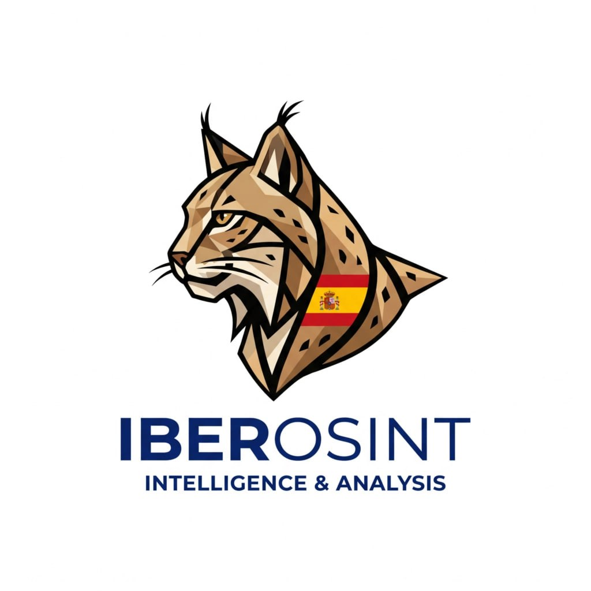
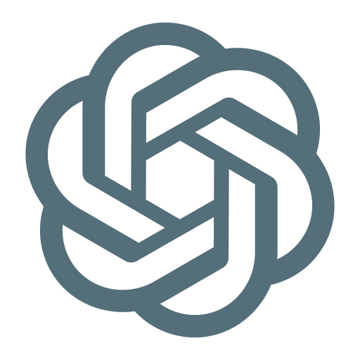
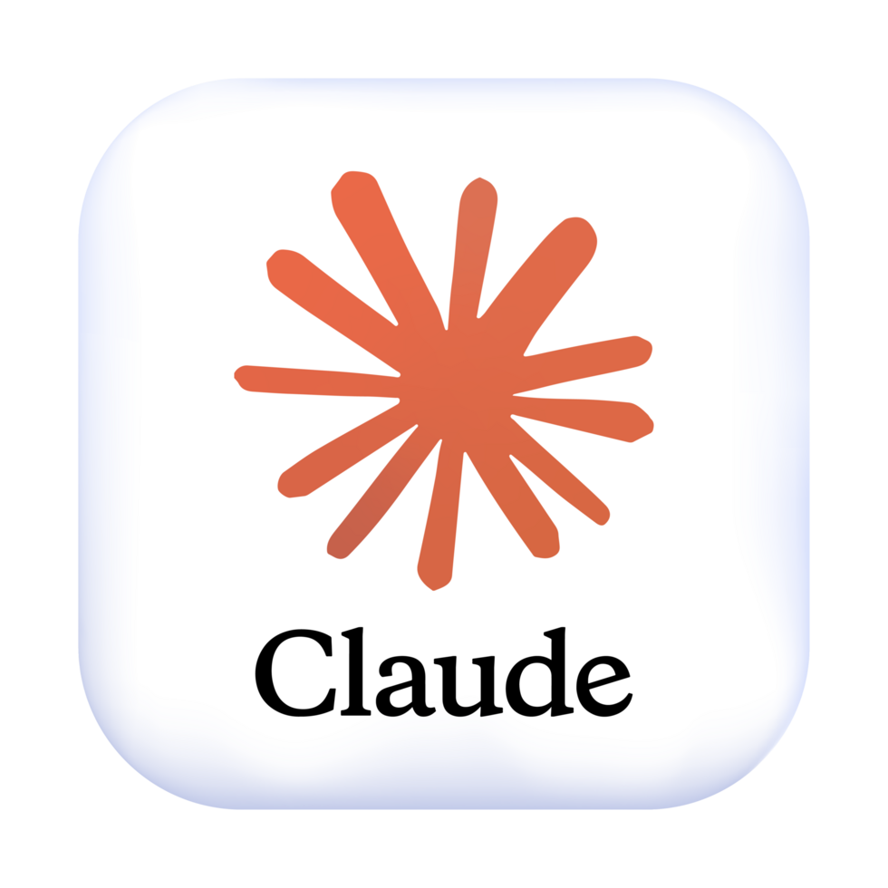
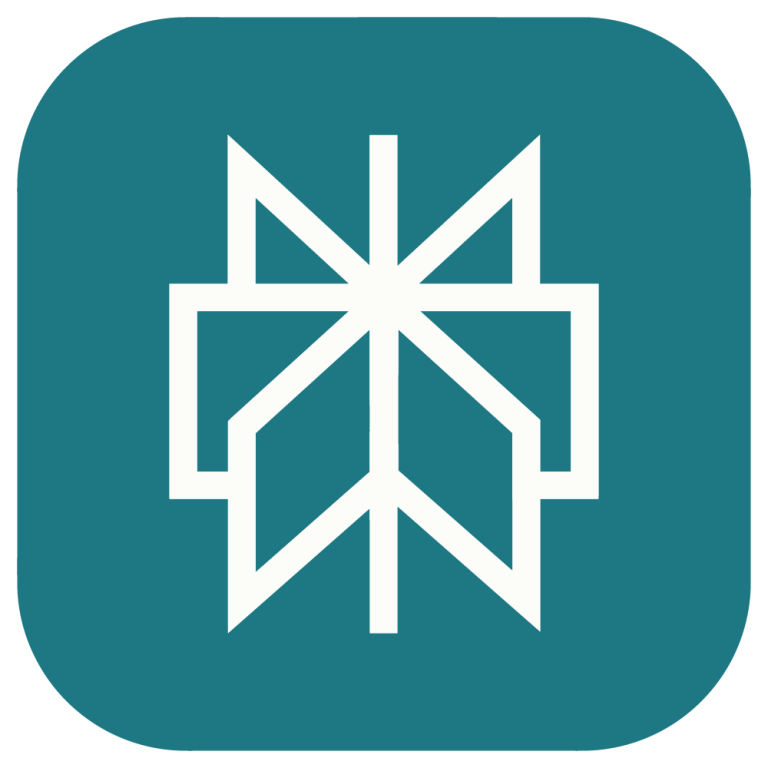
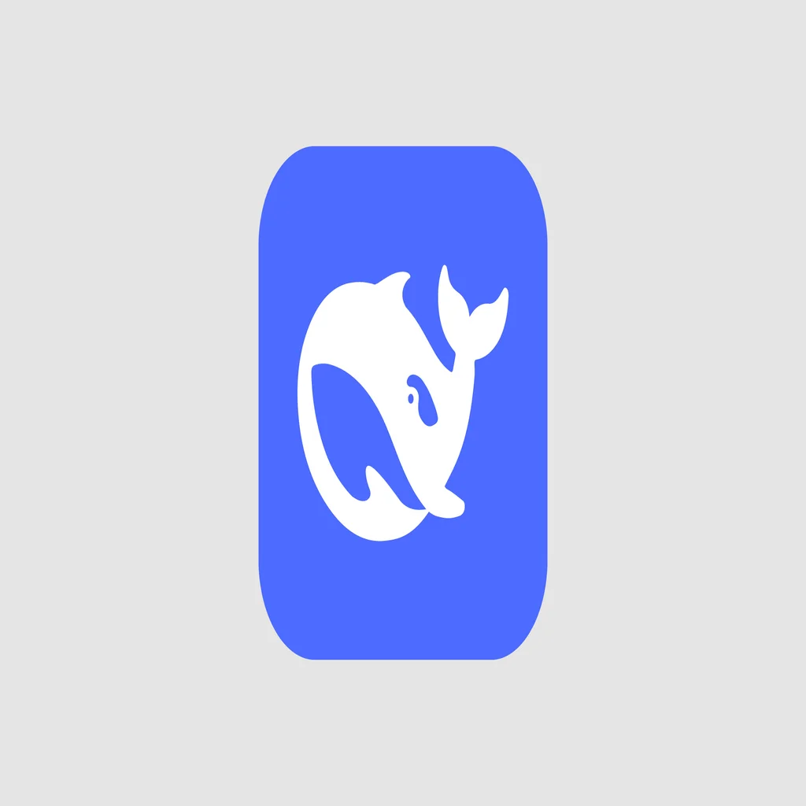
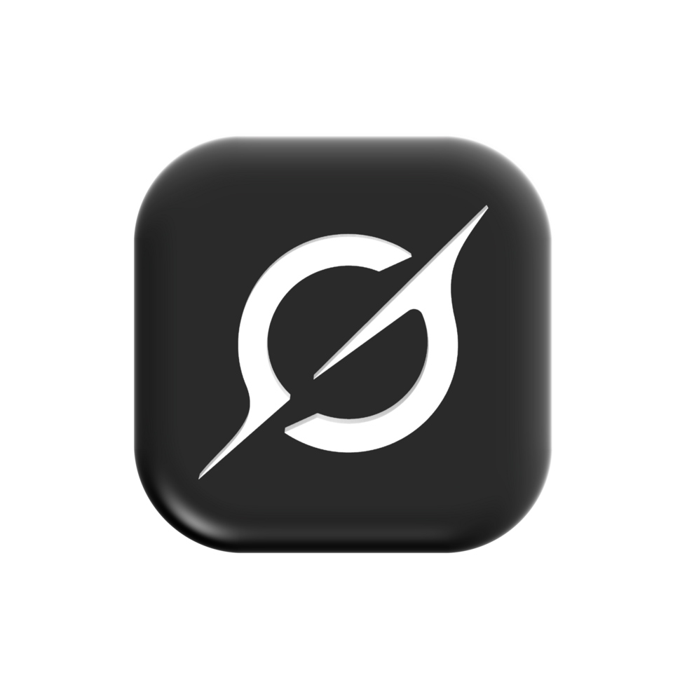
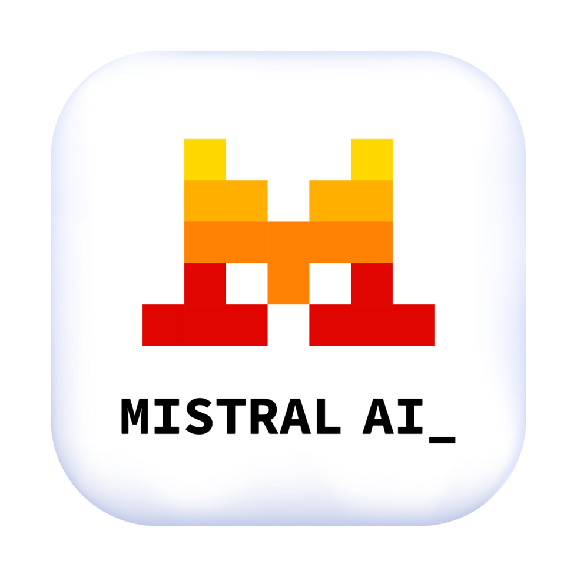

Centro de Operaciones OSINT
Plataforma de Inteligencia en Fuentes Abiertas
Centro unificado de herramientas OSINT para investigación, ciberinteligencia y análisis de información.
Acceso rápido a tus asistentes de Inteligencia Artificial








Buscador de dispositivos conectados.
Inventario global de Internet.
Motor OSINT de infraestructura.
Búsqueda de activos.
Motor OSINT.
Inventario de servicios.
Escaneo global.
Exposición de servicios.
Búsqueda de correos.
Consulta WHOIS y atribución de dominios.
Histórico DNS, subdominios y activos.
Enumeración visual de registros DNS.
Investigación de dominios y direcciones IP.
Búsqueda de certificados SSL/TLS.
Análisis de sitios web y capturas.
Información DNS, ASN y rutas.
Diagnóstico DNS y correo electrónico.
Pivoting y correlación de infraestructuras.
Análisis de archivos, URLs y direcciones IP.
Sandbox para análisis dinámico de malware.
Ejecución interactiva de malware en tiempo real.
Repositorio colaborativo de muestras de malware.
Análisis automatizado de archivos sospechosos.
Base de indicadores de compromiso (IoC).
Base de conocimiento sobre familias de malware.
Análisis de código y clasificación de malware.
Comprobación de correos comprometidos en brechas de datos.
Búsqueda de credenciales filtradas.
Consulta de fugas de información.
Investigación de credenciales y bases de datos.
Buscador de brechas de seguridad.
Motor de búsqueda de información filtrada.
Estadísticas y evolución de perfiles sociales.
Visualización alternativa de publicaciones en X.
Buscador especializado para Reddit.
Investigación de perfiles y vídeos de TikTok.
Verificación temporal de vídeos.
Búsqueda de publicaciones en redes sociales.
Análisis de actividad y perfiles sociales.
Exploración geográfica mediante imágenes satelitales.
Cartografía colaborativa mundial.
Posición del sol y sombras.
Información geográfica colaborativa.
Herramientas OSINT para geolocalización.
Imágenes colaborativas a pie de calle.
Imágenes satelitales de alta resolución.
Verificación de imágenes y vídeos.
Buscador nativo para la red Tor.
Acceso Onion al servicio Proton Mail.
Versión Onion oficial de Facebook.
Sitio oficial del Proyecto Tor en la red Onion.
Buscador especializado de servicios Onion.
Motor de búsqueda para sitios .onion.
Estado y enlaces verificados de servicios Onion.
Búsqueda avanzada de personas. (Requiere suscripción)
Localización de personas mediante datos públicos.
Directorio de personas y teléfonos.
Búsqueda de personas y direcciones.
Correlación de presencia digital.
Información pública sobre personas.
Huella digital y presencia online.
Investigación de personas en Reino Unido.
Colección de buscadores OSINT para personas.
Directorio de recursos OSINT organizados por categorías.
Colección de herramientas y recursos de investigación OSINT.
Correlación gráfica de entidades e inteligencia.
Automatización de reconocimiento OSINT.
Framework modular para reconocimiento OSINT.
Obtención de correos, subdominios y hosts.
Compartición y correlación de indicadores de compromiso.
Automatización de analizadores e integración con MISP.